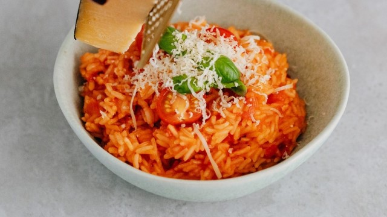

Risoto de Frango

Ingredientes
- 1 peito de frango
- 1 e 1/2 xícara de chá de arroz
- 1 lata de milho verde
- Sal e pimenta do reino a gosto
- 1 tablete de caldo de frango
- 2 dentes de alho picados
- 1/2 cebola picada
- 1 colher de sopa de manteiga
- 1/2 colher de sopa de suco de limão
Modo de Preparo
- Tempere o peito de frango com sal, pimenta do reino e o suco de limão.
- Cozinhe o peito de frango e o caldo de galinha.
- Aqueça uma colher de sopa de manteiga em uma panela e refogue o peito de frango até dourar. Depois desfie o frango.
- Em outra panela, refogue o alho e a cebola e em seguida adicione o arroz com água.
- Deixe o arroz cozinhar e em seguida adicione o milho verde e o frango desfiado.
- Misture bem e sirva.
Voltar para a lista de receitas